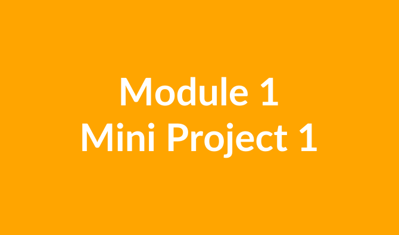

Mini Project 1
Professional JavaScript
- 📌 Review of JSON and Arrays with JSON
- 📌 Using
localStorage - 📌 Asynchronicity (Promises and Async/Await)
- 📌 Browser API (
localStorage,setIntervalandsetTimeout) - 📌 API consumption with
fetch
Technologies used include:
- HTML
- CSS
- JavaScript
